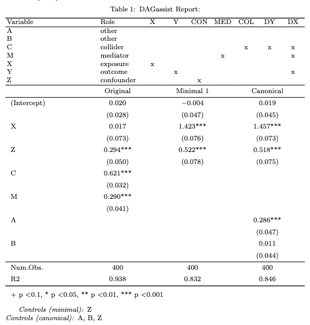

An all-in-one DAG-driven robustness check. Classifies variables by causal role, computes the smallest back-door adjustment set, and compares the significance of the original and minimal models.
Installation
You can install the development version of DAGassist from GitHub with:
install.packages("pak")
pak::pak("grahamgoff/DAGassist")
#load the library
library(DAGassist) Quick start (console)
DAGassist(dag = test_complex,
formula = feols(Y ~ X + Z + B + A + C + M | region + time, data = test_df))
DAGassist Report:
Roles:
variable role X Y conf med col desc(Y) desc(X)
X exposure x
Y outcome x x
Z confounder x
M mediator x x
C collider x x x
A other
B other
(!) Bad controls in your formula: {C, M}
Minimal controls 1: {Z}
Canonical controls: {A, B, Z}
Formulas:
original: Y ~ X + Z + B + A + C + M | region + time
Model comparison:
+------------+----------+-----------+-----------+
| | Original | Minimal 1 | Canonical |
+============+==========+===========+===========+
| X | -0.026 | 1.416*** | 1.449*** |
+------------+----------+-----------+-----------+
| | (0.100) | (0.066) | (0.059) |
+------------+----------+-----------+-----------+
| Z | 0.304*** | 0.535*** | 0.532*** |
+------------+----------+-----------+-----------+
| | (0.045) | (0.071) | (0.072) |
+------------+----------+-----------+-----------+
| B | 0.037 | | 0.005 |
+------------+----------+-----------+-----------+
| | (0.037) | | (0.053) |
+------------+----------+-----------+-----------+
| A | -0.045 | | 0.278*** |
+------------+----------+-----------+-----------+
| | (0.026) | | (0.031) |
+------------+----------+-----------+-----------+
| C | 0.627*** | | |
+------------+----------+-----------+-----------+
| | (0.030) | | |
+------------+----------+-----------+-----------+
| M | 0.308*** | | |
+------------+----------+-----------+-----------+
| | (0.050) | | |
+------------+----------+-----------+-----------+
| Num.Obs. | 400 | 400 | 400 |
+------------+----------+-----------+-----------+
| R2 | 0.941 | 0.838 | 0.851 |
+------------+----------+-----------+-----------+
| FE: region | X | X | X |
+------------+----------+-----------+-----------+
| FE: time | X | X | X |
+============+==========+===========+===========+
| + p < 0.1, * p < 0.05, ** p < 0.01, *** p < |
| 0.001 |
+============+==========+===========+===========+ Export your results in LaTeX, Word, Excel, or plain text
DAGassist(
test_complex, Y ~ X + Z + C + M + A + B, test_df,
type = "latex", out = "man/figures/README-latex.tex"
)
Controlling DAG-based additions
By default imply = FALSE so no variables are added to your spec based on the relationships in your DAG. Set imply = TRUE to get the complete minimal and canonical adjustment sets, based on your DAG.
DAGassist(
dag = test_complex,
formula = lm(Y~X+C, data = test_df),
imply = TRUE
)
DAGassist Report:
Roles:
variable role X Y conf med col desc(Y) desc(X)
X exposure x
Y outcome x x
Z confounder x
M mediator x x
C collider x x x
A other
B other
(!) Bad controls in your formula: {C}
Minimal controls 1: {Z}
Canonical controls: {A, B, Z}
Formulas:
original: Y ~ X + C
minimal 1 : Y ~ X + Z
canonical: Y ~ X + A + B + Z
Note: DAGassist added variables not in your formula, based on the
relationships in your DAG, to block back-door paths
between X and Y.
- Minimal 1 added: {Z}
- Canonical added: {A, B, Z}
Model comparison:
+-------------+----------+-----------+-----------+
| | Original | Minimal 1 | Canonical |
+=============+==========+===========+===========+
| (Intercept) | 0.012 | -0.004 | 0.019 |
+-------------+----------+-----------+-----------+
| | (0.031) | (0.047) | (0.045) |
+-------------+----------+-----------+-----------+
| X | 0.146* | 1.423*** | 1.457*** |
+-------------+----------+-----------+-----------+
| | (0.074) | (0.076) | (0.073) |
+-------------+----------+-----------+-----------+
| C | 0.752*** | | |
+-------------+----------+-----------+-----------+
| | (0.030) | | |
+-------------+----------+-----------+-----------+
| Z | | 0.522*** | 0.518*** |
+-------------+----------+-----------+-----------+
| | | (0.078) | (0.075) |
+-------------+----------+-----------+-----------+
| A | | | 0.286*** |
+-------------+----------+-----------+-----------+
| | | | (0.047) |
+-------------+----------+-----------+-----------+
| B | | | 0.011 |
+-------------+----------+-----------+-----------+
| | | | (0.044) |
+-------------+----------+-----------+-----------+
| Num.Obs. | 400 | 400 | 400 |
+-------------+----------+-----------+-----------+
| R2 | 0.926 | 0.832 | 0.846 |
+=============+==========+===========+===========+
| + p < 0.1, * p < 0.05, ** p < 0.01, *** p < |
| 0.001 |
+=============+==========+===========+===========+